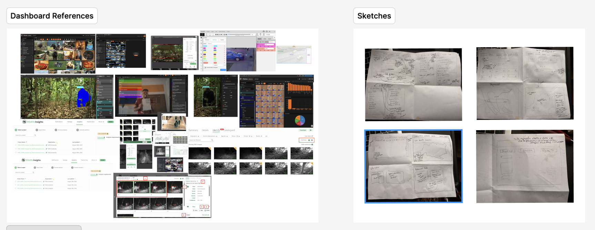
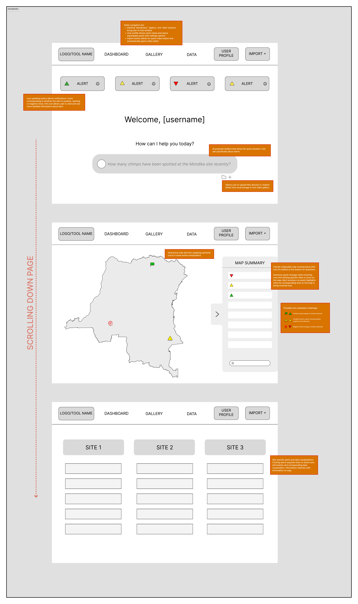
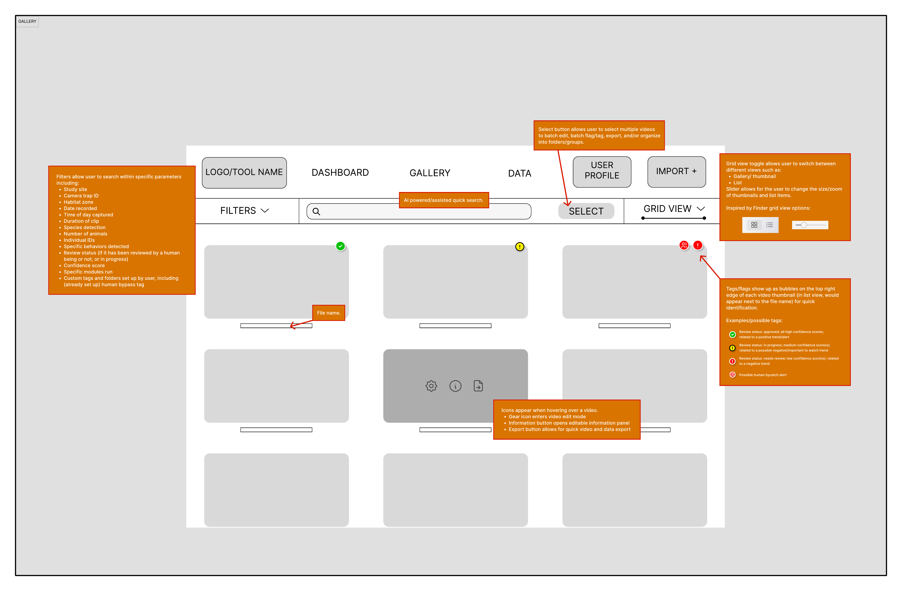
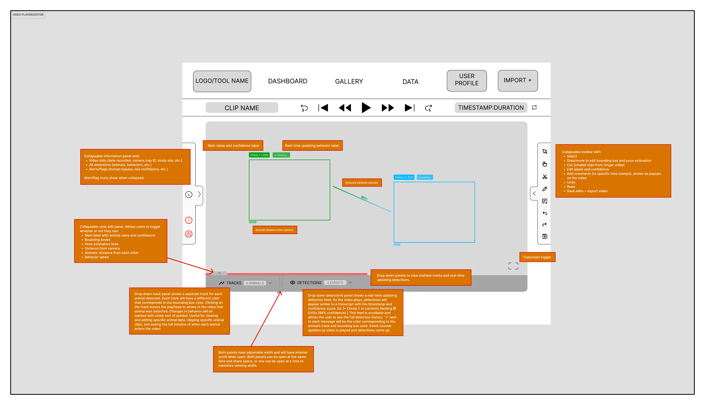
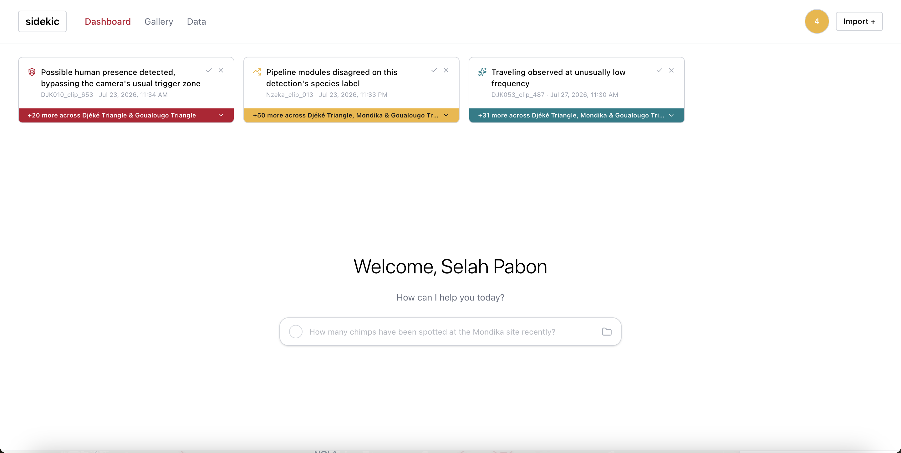
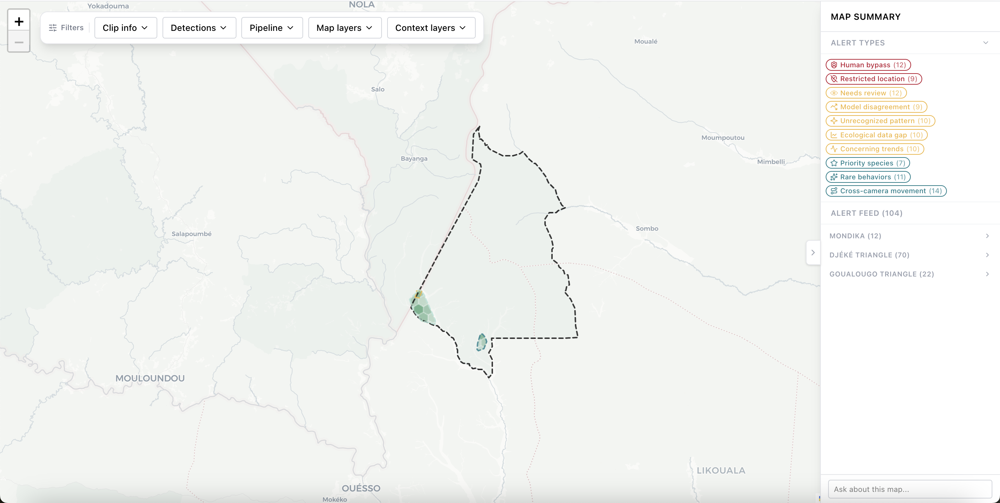
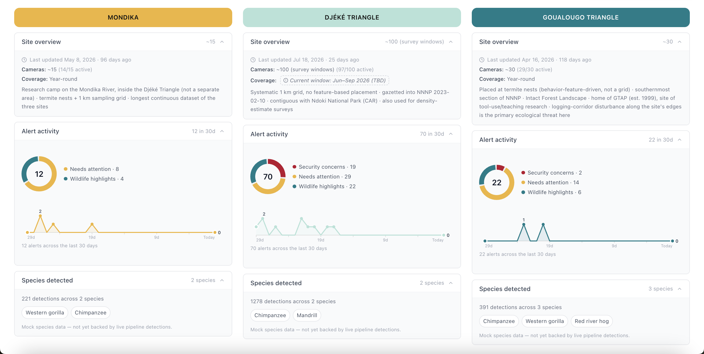
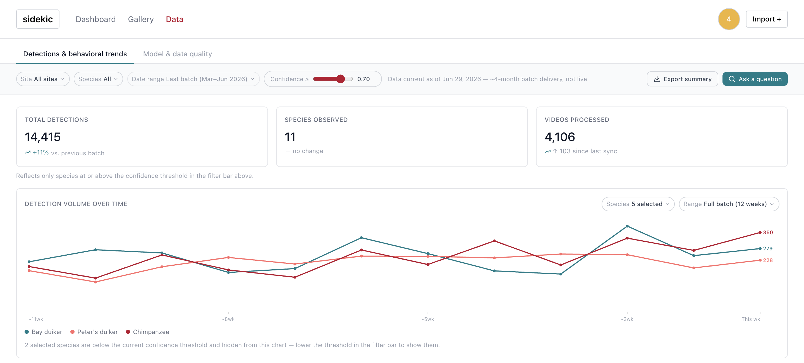
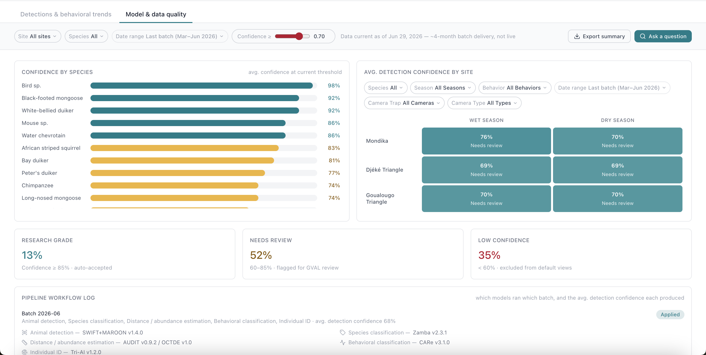

Animal Indicators
SIDEKiC: Species Identification and Distance Estimation for Kinematics and Conservation. A practitioner dashboard for reviewing AI-processed wildlife camera trap footage from the Congo Basin, built for conservation researchers and field staff instead of data scientists.
The Short Version
Camera traps across the Congo Basin generate more than 250,000 video clips a year, and reviewing that footage by hand takes an estimated 2,500 hours annually. Losing behaviors like tool use is often an early warning sign of ecological stress that can show up well before a population actually crashes; chimpanzee communities in high-human-impact areas already show an 88% lower rate of natural behaviors. The problem wasn't a lack of data; it was that nobody had built a way to turn that data into something a conservation manager could act on.
Context & Problem
Animal Indicators started as a 10-week summer project through Washington University in St. Louis's Digital Transformation Research Corps (DTRC). The research team, led by Principal Investigator Crickette Sanz, had already built an automated pipeline chaining together animal detection, species classification, distance estimation, behavioral classification, and individual recognition to process camera trap footage from three field sites in the Republic of Congo: Goualougo Triangle, Mondika, and Djéké Triangle.
The pipeline's output lived in FiftyOne, an open-source tool built for data scientists: usable if you already understand model confidence scores and metadata structures, but not for a field ranger or program manager without that background. As the dev team lead put it during an early demo, FiftyOne is "difficult or overwhelming for an everyday resident, researcher, etc." My job was to design a new interface from scratch, called SIDEKiC, that different kinds of users (from field practitioners with limited connectivity to researchers who need raw data exports) could actually use.
The data shown has been replaced with placeholder values to protect the privacy of the original dataset; the visualization system and design decisions reflect the real project.
This is the foundation phase of an ongoing initiative visualizing animal population trends for conservation audiences; future iterations will expand the dataset and scope, either by me or collaborating designers.
Process
Before touching any layout, I worked through six research questions and five design-strategy questions covering how practitioners already work in the field, what existing conservation dashboards get right and wrong, the behavioral science behind the project's premise, connectivity and device constraints, and how to design one interface that serves both expert and non-expert users. A few decisions shaped everything that followed:
Research before screens
Global Forest Watch became a cautionary example: a technically impressive tool that, in a practitioner's own words, taught the team that "data alone doesn't create conservation impact." That reframed the guiding question for every screen from "what data can we show" to "what decision does this screen help someone make." eBird Status and Trends, built by the Cornell Lab of Ornithology, became the primary precedent in the other direction, since it serves casual birders and professional scientists through the same system by showing a simple view by default and putting the full dataset behind a "download data" option. I carried that same principle into SIDEKiC: a plain-language main dashboard for quick decisions, with a separate, easily accessible research page underneath it for anyone who wants the raw data.

Designing for the field, not the office
Mobile internet penetration across sub-Saharan Africa sits around 27–28%, and camera trap data here is physically carried out on hard drives roughly every four months rather than uploaded live, which ruled out any design built around real-time syncing. That made offline-first patterns and French-language support requirements from day one rather than later additions, since the Republic of Congo is Francophone. Data ethics research shaped access more broadly, too: over 90% of camera trap projects unintentionally capture images of humans, and publishing precise locations of rare species has led to poaching within months, which pushed me to look closely at the CARE Principles for Indigenous Data Governance. The tool is currently only accessible to Sanz's team, with wider access planned as a future phase. A live demo with the dev team was also a turning point: it confirmed the direction to build a new dashboard rather than skin the existing tool, and two features I proposed (a natural-language chat bar and a map visualization of species detections) were confirmed and carried forward.

Narrowing an alert system built to catch everything
Early on, the goal was comprehensive coverage: flagging anything that might matter to a practitioner, from security concerns like a human bypassing a camera's trigger zone to ecological signals like an unusually low frequency of a behavior. That comprehensive version quickly became noisy and hard to scan, so I went through several rounds of narrowing the list down, grouping similar alerts, cutting ones that overlapped or rarely fired, and organizing what remained into three broader categories: security concerns, needs-attention items, and wildlife highlights. What started as a sprawling list eventually shrank to 11 distinct alert types, each tied to a color and grouped by severity, so the alert feed stays scannable at a glance.

Scoping the annotation tool to what the pipeline could support
I looked at annotation tools the dev team was evaluating, including CVAT and SLEAP, to understand what correction and labeling workflows the dashboard needed to support. Based on direct guidance from the dev team, I scoped the annotation feature down to single-frame corrections rather than the more complex auto-propagation originally envisioned. A separate, unresolved question from this stage: Washington University's official brand palette leads with a strong red, which conflicted with red already doing semantic work in the dashboard as the signal for security concerns and declining trends. I resolved that by keeping WashU red to a supporting role and building the rest of the visual system around teal and gold, which also map to the three field sites.

Final Solution
The result is SIDEKiC, a purpose-built practitioner dashboard, not a reskin of the existing pipeline tool. It's split into two connected spaces: a main dashboard meant for quick, non-technical decisions, and a separate, easily accessible research page underneath it that holds the raw data for anyone who wants to dig in.





The dashboard tracks behavior using the same categories the research team already uses in the field: ongoing states like traveling, feeding, resting, and social interaction, and higher-value events like tool use and tool transfer, which the team treats as some of the strongest cultural and ecological signals. Visually, SIDEKiC stays clean and light by default, with color-coded badges and cards instead of dense tables so a practitioner can scan status at a glance; confidence is always shown as a plain category rather than a raw score, though the number is available on the research page for anyone who wants it. The interface supports French from the start, meets WCAG 2.1 AA accessibility standards, and includes a fully-supported dark mode.
Final walkthrough: sped up 2×
Gallery clip review
Map filters & alert feed
Profile & accessibility settings
Outcome
This was a 10-week foundation phase, not a full product launch, so there isn't hard usage data yet: the concrete outcome so far is qualitative. The research team responded well to the direction and sees SIDEKiC having a real impact on the conservation field once it's fully built out.
Reflection
This project pushed my research skills further than any project before it and meant translating the same idea for very different audiences (developers, researchers, and PIs), each needing it explained a different way; every screen went through a lot of iteration, since the priority was always making information easy to find and quick to read, not just complete.
If I had more time, I'd want to work on the tool's branding and logo and add some lighthearted touches, like animal-themed profile icons and custom icons for the SIDEKiC AI assistant, to give the tool a bit more personality.